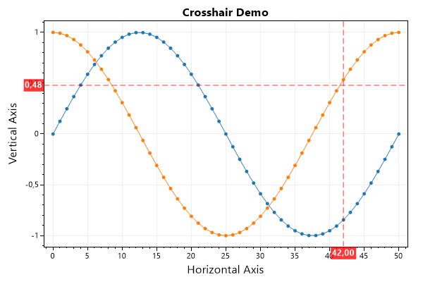
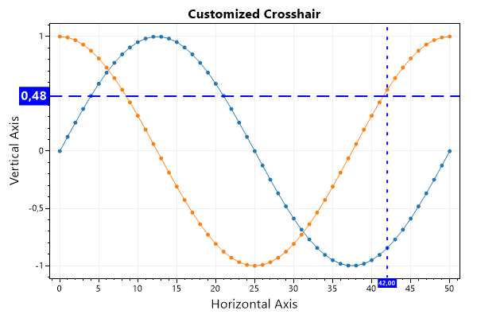
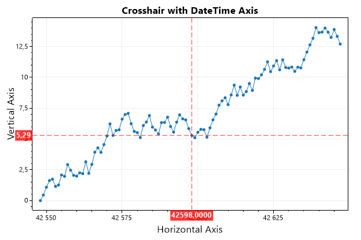
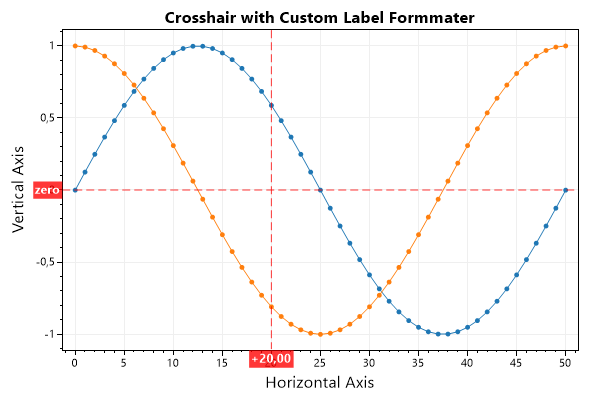
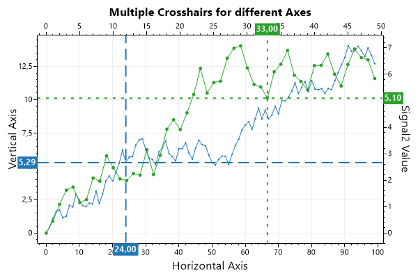

This page contains recipes for the Crosshair category.
Visit the Cookbook Home Page to view all cookbook recipes.
Visit the Cookbook Home Page to view all cookbook recipes.
Crosshair
The Crosshair plot type draws vertical and horizontal lines that intersect at a point on the plot and the coordinates of those lines are displayed on top of the axis ticks. This plot type is typically updated after MouseMove events to track the mouse
var plt = new ScottPlot.Plot(600, 400);
plt.AddSignal(ScottPlot.DataGen.Sin(51));
plt.AddSignal(ScottPlot.DataGen.Cos(51));
plt.AddCrosshair(42, 0.48);
plt.Title("Crosshair Demo");
plt.XLabel("Horizontal Axis");
plt.YLabel("Vertical Axis");
plt.SaveFig("crosshair_quickstart.png");

Crosshair Customization
Crosshair styling and label formatting can be customized by accessing public fields.
var plt = new ScottPlot.Plot(600, 400);
plt.Title("Customized Crosshair");
plt.XLabel("Horizontal Axis");
plt.YLabel("Vertical Axis");
plt.AddSignal(ScottPlot.DataGen.Sin(51));
plt.AddSignal(ScottPlot.DataGen.Cos(51));
var ch = plt.AddCrosshair(42, 0.48);
// you can style both lines at the same time
ch.LineStyle = LineStyle.Dash;
ch.Color = System.Drawing.Color.Blue;
ch.LineWidth = 2;
// or reach in and style lines individually
ch.HorizontalLine.PositionLabelFont.Size = 16;
ch.VerticalLine.PositionLabelFont.Size = 8;
ch.VerticalLine.LineStyle = LineStyle.Dot;
plt.SaveFig("crosshair_customize.png");

DateTime Axis Label
Crosshair labels display numeric labels by default, but a public field makes it possible to convert positions to DateTime (FromOATime) when generating their axis labels.
var plt = new ScottPlot.Plot(600, 400);
plt.Title("Crosshair with DateTime Axis");
plt.XLabel("Horizontal Axis");
plt.YLabel("Vertical Axis");
// plot DateTime data
int pointCount = 100;
Random rand = new Random(0);
double[] values = ScottPlot.DataGen.RandomWalk(rand, pointCount);
DateTime[] dates = Enumerable.Range(0, pointCount)
.Select(x => new DateTime(2016, 06, 27).AddDays(x))
.ToArray();
double[] xs = dates.Select(x => x.ToOADate()).ToArray();
plt.AddScatter(xs, values);
// add a crosshair
var ch = plt.AddCrosshair(xs[50], values[50]);
// indicaite horizontal axis is DateTime and give a proper DateTime format string
// https://docs.microsoft.com/en-us/dotnet/standard/base-types/custom-date-and-time-format-strings
ch.VerticalLine.PositionFormatter = pos => DateTime.FromOADate(pos).ToString("d");
// use a numeric vertical axis but customize the format string
// https://docs.microsoft.com/en-us/dotnet/standard/base-types/standard-numeric-format-strings
ch.VerticalLine.PositionFormatter = pos => pos.ToString("F4");
plt.SaveFig("crosshair_formatting.png");

Custom Label Format
For ultimate control over crosshair label format you can create a custom formatter function and use that to convert positions to labels. This allows logic to be used to format crosshair labels.
var plt = new ScottPlot.Plot(600, 400);
plt.AddSignal(ScottPlot.DataGen.Sin(51));
plt.AddSignal(ScottPlot.DataGen.Cos(51));
var ch = plt.AddCrosshair(20, 0);
// create a custom formatter as a static class
static string customFormatter(double position)
{
if (position == 0)
return "zero";
else if (position > 0)
return $"+{position:F2}";
else
return $"({Math.Abs(position):F2})";
}
// use the custom formatter for X and Y crosshair labels
ch.HorizontalLine.PositionFormatter = customFormatter;
ch.VerticalLine.PositionFormatter = customFormatter;
// style the plot
plt.Title("Crosshair with Custom Label Formmater");
plt.XLabel("Horizontal Axis");
plt.YLabel("Vertical Axis");
plt.SaveFig("crosshair_customlabelformatting.png");

Crosshairs on Multiple Axes
Crosshairs label coordinates on the primary axes by default, but the axis index can be changed allowing multiple crosshairs to label multiple axes.
var plt = new ScottPlot.Plot(600, 400);
// add a signal and crosshair to the primary X and Y axis (index 0)
var signal1 = plt.AddSignal(DataGen.RandomWalk(null, 100));
var cross1 = plt.AddCrosshair(24, 5.29);
cross1.LineWidth = 2;
// add a signal and crosshair to the secondary X and Y axis (index 1)
var signal2 = plt.AddSignal(DataGen.RandomWalk(null, 50));
signal2.YAxisIndex = 1;
signal2.XAxisIndex = 1;
var cross2 = plt.AddCrosshair(33, 5.1);
cross2.HorizontalLine.PositionLabelOppositeAxis = true;
cross2.VerticalLine.PositionLabelOppositeAxis = true;
cross2.YAxisIndex = signal2.YAxisIndex;
cross2.XAxisIndex = signal2.XAxisIndex;
cross2.LineStyle = LineStyle.Dot;
cross2.LineWidth = 2;
// apply signal colors to the crosshairs
cross1.Color = signal1.Color;
cross2.Color = signal2.Color;
// add axis labels
plt.Title("Multiple Crosshairs for different Axes");
plt.XLabel("Horizontal Axis");
plt.YLabel("Vertical Axis");
plt.YAxis2.Label("Signal2 Value");
// show ticks for axes where ticks are hidden by default
plt.YAxis2.Ticks(true);
plt.XAxis2.Ticks(true);
plt.SaveFig("crosshair_multiple_different_axes.png");
